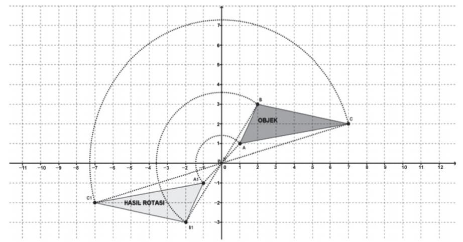
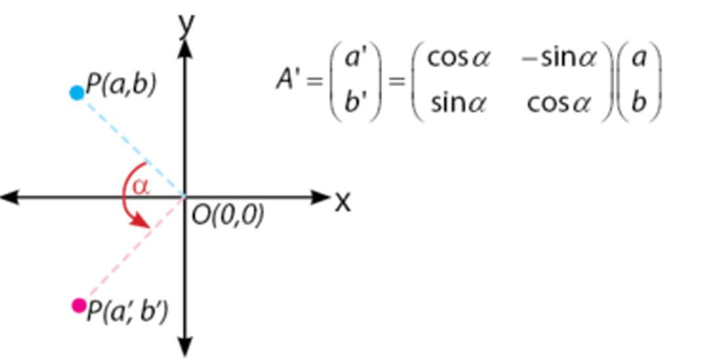
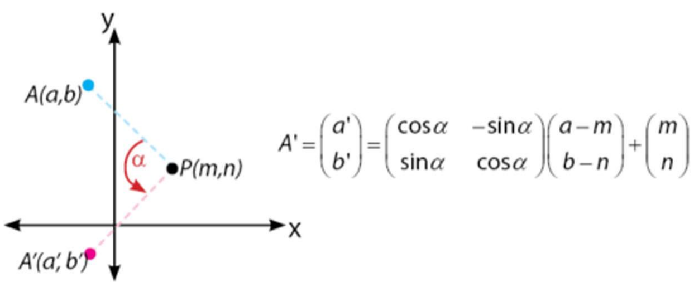
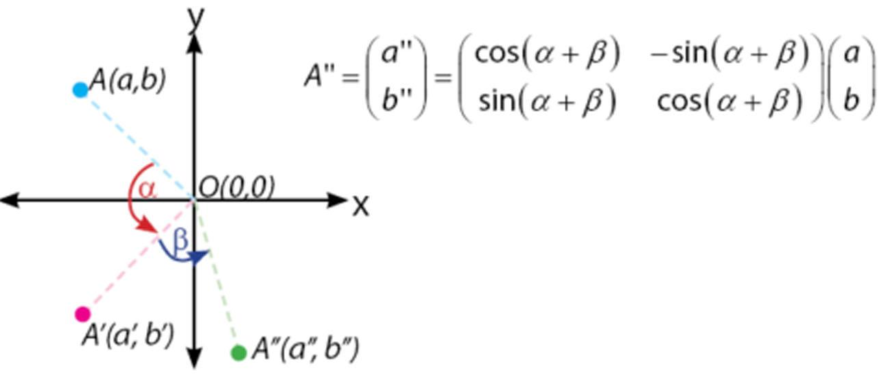
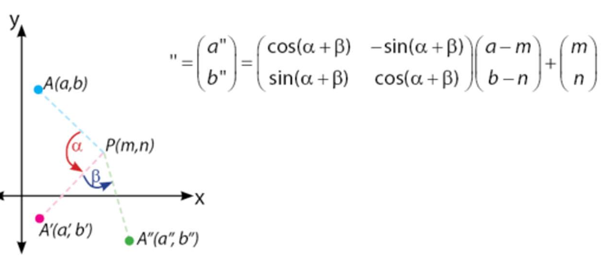

Rotasi
Konsep Rotasi
Rotasi adalah perputaranCoba kamu amati lingkungan sekitarmu ! Objek apa yang bergerak berputar? Banyak contoh objek yang bergerak berputar, seperti: jarum jam bergerak berputar menunjukkan angka, kipas angin, dan lain-lain. Coba amati rotasi objek geometri pada gambar di bawah ini
Terdapat berbagai jenis rotasi diantaranya adalah :
1. Rotasi dengan pusat O (0,0) dengan besar putaran sebesar α
2. Rotasi dengan Pusat (m,n) sebesar α
3. Rotasi dengan pusat (0,0) sebesar α kemudian sebesar β
4. Rotasi dengan pusat P(m,n) sebesar α kemudian sebesar β
